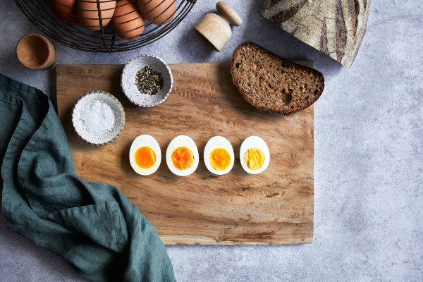

Boiled Egg

Description
There's no better comfort food than soft boiled eggs with buttered toast soldiers. Boiled eggs also feature in a huge range of dishes such as salads, sandwiches and curries, and for some of these dishes, you'll want a harder boiled egg.
So how do you get perfect soft, medium or hard boiled eggs, every time? A great boiled egg really comes down to timing. Use a timer to keep it precise and remember that the timer needs to start when the water starts simmering. Follow the method below and after doing it a few times you'll be able to cook exactly the boiled eggs you want without even thinking about it.
Ingredients
- eggs
- tap water
- bread for toasting
- salt and pepper
steps
- Take a saucepan and half fill it with cold water from the tap. Gently lower the eggs into the saucepan.
- Place the pan over a medium heat. When the water reaches a simmer, start the timer so you can precisely time the cooking process. If you gently stir the eggs in a clockwise direction, the movement of the water will help centre the yolks.
- Simmer the eggs in the saucepan for the length of time that suits your boiled eggs preference.
- Use a large spoon to remove the eggs from the water.
- Cool the eggs by running them under cold tap water for 30-60 seconds or placing them in a bowl of iced water.